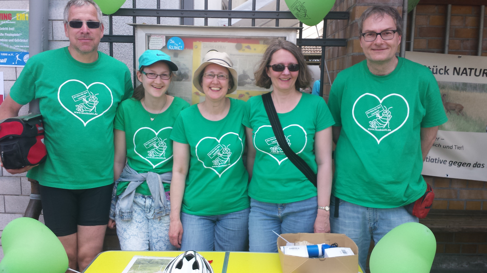
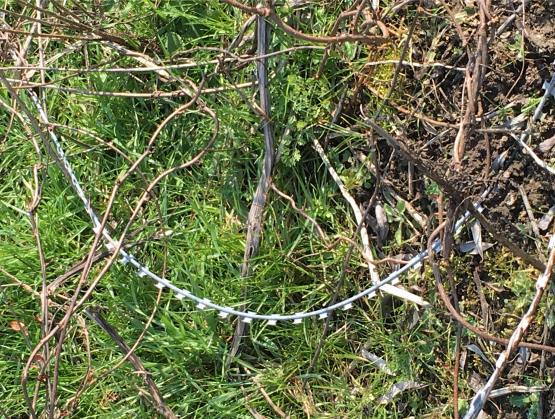
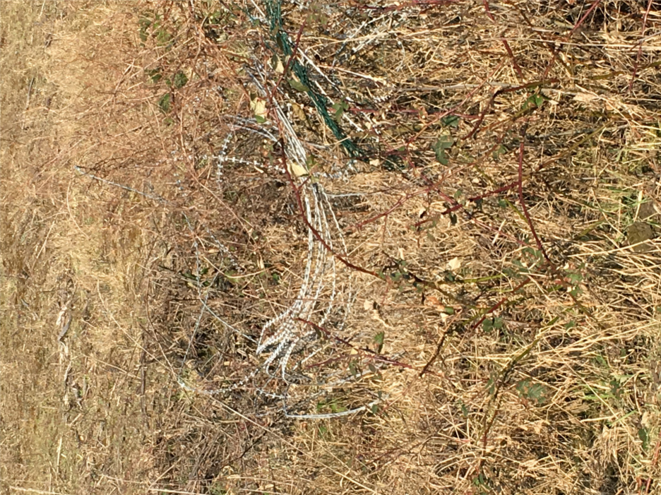

Der Natodraht, der seit der Rodung in der letzten Februarwoche frei auf dem Feld lagerte und eine Gefahr für Mensch und Tier darstellte, wurde nun endlich am 27.05.2016, nach drei Monaten(!), beseitigt.
Ein erster Erfolg der BI!
Der Info-Stand der BI bei „Der Kreis rollt“ in Dornheim am 22.05.2016.

Fallen am Altmann
Fallen am Altmann
An den gerodeten Durchbrüchen für die neuen Stellplätze wurde der alte Stacheldrahtzaun nicht ordnungsgemäß entfernt, sondern einfach liegen gelassen. Dadurch entsteht eine akute Gefahr für die Wildtiere und freilaufende Hunde.
.JPG "Stacheldraht am Lausböhl")
.JPG "Stacheldraht am Lausböhl")
.JPG "Stacheldraht am Lausböhl")


Die Firma Altmann schafft Fakten
An den geplanten Durchbrüchen für die neuen Stellplätze wurden am 18. und 19.02.16 die Bäume und Büsche mit Genehmigung (datiert vom 17.12.15) der zuständigen Behörde gerodet. Obwohl gemäß den Aussagen von Bürgermeister Sauer am 02.02.16 noch völlig offen ist, ob die geplante Erweiterung der Firma Altmann auf dem Gelände des Lausböhls umgesetzt werden darf.
.JPG "Durchbrüche am Lausböhl")
.JPG "Durchbrüche am Lausböhl")